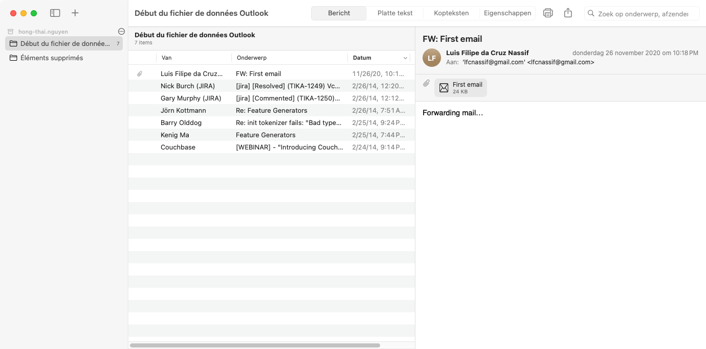
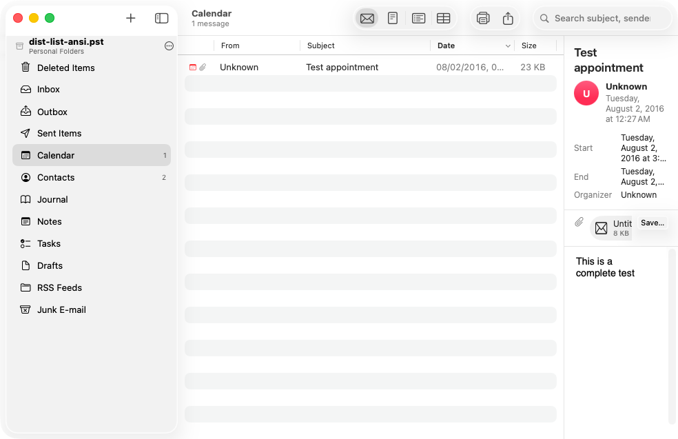
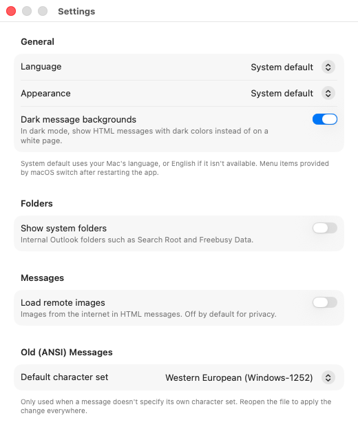

Je oude Outlook-mail,
gewoon op je Mac.
Your old Outlook mail,
right on your Mac.
PST Viewer opent Outlook-archieven (.pst en .ost) en oude Netscape- en Thunderbird-mail. Zonder Outlook, zonder gedoe met omzetten — en gratis.
PST Viewer opens Outlook archives (.pst and .ost) and old Netscape and Thunderbird mail. No Outlook, no fiddly conversions — and free.

Herken je dit?Sound familiar?
Een map met oude mail die je niet meer kunt openen, omdat het programma waarmee je hem maakte er niet meer is. A folder of old mail you can't open any more, because the program that made it is long gone.
Overgestapt van WindowsSwitched from Windows
Je hebt een Mac gekocht, maar je mail van jaren staat nog in een .pst-bestand van je oude pc.You bought a Mac, but years of mail are still in a .pst file from your old PC.
Archief van het werkAn archive from work
Je kreeg bij vertrek een kopie van je mailbox mee, of je moet iets terugzoeken in een oud bedrijfsarchief.You took a copy of your mailbox when you left, or you need to look something up in an old company archive.
Oude back-up gevondenFound an old backup
Op een oude schijf of usb-stick staat mail uit Outlook, Netscape, Mozilla of Thunderbird — misschien wel van twintig jaar terug.An old drive or USB stick holds mail from Outlook, Netscape, Mozilla or Thunderbird — maybe from twenty years ago.
Wat kun je ermee?What can it do?
Het werkt zoals je van Mail of Outlook gewend bent: mappen links, berichten in het midden, het bericht zelf rechts. It works the way you know from Mail or Outlook: folders on the left, messages in the middle, the message itself on the right.
Al je mail lezenRead all your mail
Berichten zien eruit zoals ze verstuurd zijn, met opmaak en afbeeldingen. Ook heel oude Outlook-berichten.Messages look the way they were sent, with formatting and pictures. Even very old Outlook messages.
Bijlagen openen en bewarenOpen and save attachments
Bekijk foto's en documenten met Snel bekijken, open ze, of bewaar ze allemaal tegelijk in een map.Preview photos and documents with Quick Look, open them, or save them all to a folder at once.
Snel zoekenFind things fast
Zoek op onderwerp, afzender of ontvanger, in één map of in alles tegelijk — desgewenst ook in de tekst van de berichten.Search by subject, sender or recipient, in one folder or everywhere — and in the message text too, if you like.
Contacten en agendaContacts and calendar
Ook adresboek, afspraken en taken uit Outlook zijn te bekijken, met telefoonnummers, tijden en locaties.Your Outlook address book, appointments and tasks can be viewed too, with phone numbers, times and locations.
Overzetten naar Apple MailMove it to Apple Mail
Bewaar losse berichten, een hele map of je zoekresultaten in een formaat dat Apple Mail en Thunderbird kunnen importeren.Save single messages, a whole folder or your search results in a format Apple Mail and Thunderbird can import.
Veilig en privéSafe and private
Je bestanden worden alleen gelezen, nooit veranderd. Er gaat niets naar internet en er is geen account nodig.Your files are only read, never changed. Nothing is sent to the internet and you don't need an account.
Ook voor héél oude archievenEven for really old archives
- Outlook 97 tot nu — ook de oude bestanden van maximaal 2 GB en
.ost-bestanden. - Outlook 97 to today — including the old files of up to 2 GB and
.ostfiles. - Netscape, Mozilla en Thunderbird — open gewoon de map waarin je mail staat.
- Netscape, Mozilla and Thunderbird — just open the folder your mail is in.
- Meerdere archieven tegelijk — ze staan onder elkaar in de zijbalk.
- Several archives at once — they're listed one below the other in the sidebar.
- Verzonden mail toont aan wie je het stuurde, niet steeds je eigen naam.
- Sent mail shows who you sent it to, not your own name every time.
- Vreemde tekens in oude mail (é, ë, ü…) worden zo goed mogelijk goed getoond; in de instellingen kun je dat bijstellen.
- Accented characters in old mail (é, ë, ü…) are shown correctly wherever possible; you can fine-tune this in Settings.


Voelt als een echte Mac-appFeels like a real Mac app
- Nederlands en Engels — volgt automatisch de taal van je Mac.
- English and Dutch — follows your Mac's language automatically.
- Licht en donker — past zich aan je Mac aan, ook voor de mail zelf.
- Light and dark — matches your Mac, including the mail itself.
- Afbeeldingen van internet worden standaard tegengehouden, zodat afzenders niet zien dat je hun mail opent.
- Images from the internet are blocked by default, so senders can't tell you opened their mail.
- Klein en snel — ook grote archieven gaan meteen open.
- Small and fast — even large archives open right away.
Zo werkt hetHow it works
In drie stappen lees je je oude mail.Three steps to your old mail.
DownloadenDownload
Klik op Download voor Mac. Dubbelklik het zip-bestand in je map Downloads en sleep PST Viewer naar je map Apps (Programma's). Click Download for Mac. Double-click the zip file in your Downloads folder and drag PST Viewer to your Applications folder.
De app startenStart the app
Dubbelklik PST Viewer in je map Apps. De eerste keer vraagt je Mac of je een app van internet wilt openen: klik op Open. Double-click PST Viewer in your Applications folder. The first time, your Mac asks whether you want to open an app from the internet: click Open.
Je archief openenOpen your archive
Sleep je .pst-bestand of mailmap naar het venster, of kies Archief → Open PST-bestand of mailmap… (⌘ O). Klaar!
Drag your .pst file or mail folder onto the window, or choose File → Open PST File or Mail Folder… (⌘ O). Done!
Zegt je Mac dat hij de app „niet kan controleren”?
Dat gebeurt alleen bij een testversie die niet door Apple is gecontroleerd. Zo open je hem toch:
- Dubbelklik PST Viewer in je map Apps. Klik in de melding op Gereed (of OK).
- Open Systeeminstellingen → Privacy en beveiliging en scrol naar beneden.
- Klik bij „PST Viewer werd geblokkeerd” op Open toch en bevestig met je wachtwoord of Touch ID.
Op macOS 13 en 14 kan het ook sneller: klik met de rechtermuisknop (of ctrl-klik) op de app, kies Open en dan nog eens Open. Daarna start de app voortaan gewoon met een dubbelklik.
Does your Mac say it "can't verify" the app?
That only happens with a test build that Apple hasn't checked. Here's how to open it anyway:
- Double-click PST Viewer in Applications. In the message, click Done (or OK).
- Open System Settings → Privacy & Security and scroll down.
- Next to "PST Viewer was blocked", click Open Anyway and confirm with your password or Touch ID.
On macOS 13 and 14 there's a shortcut: right-click (or control-click) the app, choose Open, then Open again. After that the app starts with a normal double-click.
Veelgestelde vragenFrequently asked questions
Wat is een PST-bestand eigenlijk?What is a PST file, anyway?
Outlook op Windows bewaart je mail, contacten en agenda in één groot bestand dat eindigt op .pst (of .ost). Bij het archiveren of exporteren van je mailbox krijg je zo'n bestand. Op een Mac kun je het normaal gesproken niet openen — daar is PST Viewer voor.
Outlook on Windows keeps your mail, contacts and calendar in one big file ending in .pst (or .ost). When you archive or export your mailbox, that's the file you get. A Mac normally can't open it — that's what PST Viewer is for.
Waar vind ik mijn PST-bestand?Where do I find my PST file?
Op een Windows-pc staat het meestal in Documenten\Outlook-bestanden, of (bij oudere versies) diep in de verborgen map AppData\Local\Microsoft\Outlook. Zoek op de oude pc of back-upschijf naar *.pst. Kopieer het bestand naar je Mac, bijvoorbeeld via een usb-stick.
On a Windows PC it's usually in Documents\Outlook Files, or (for older versions) deep inside the hidden folder AppData\Local\Microsoft\Outlook. Search the old PC or backup drive for *.pst. Copy the file to your Mac, for example with a USB stick.
En mijn oude Netscape- of Thunderbird-mail?What about my old Netscape or Thunderbird mail?
Die programma's bewaren elke mailmap als een bestand zonder extensie, zoals Inbox en Sent. Kies in PST Viewer de map waar die bestanden in staan (of sleep die map naar het venster), en je ziet je mail met alle mappen en submappen. Ook een export uit Apple Mail (.mbox) gaat open.
Those programs keep every mail folder as a file without an extension, such as Inbox and Sent. In PST Viewer, choose the folder that contains those files (or drag that folder onto the window) and you'll see your mail with all its folders and subfolders. An Apple Mail export (.mbox) opens too.
Kan ik mijn mail overzetten naar Apple Mail?Can I move my mail to Apple Mail?
Ja. Kies een map en exporteer die als .mbox. In Apple Mail kies je daarna Archief → Importeer postbussen… en wijs je dat bestand aan. Je kunt ook alleen je zoekresultaten exporteren, of één bericht bewaren als .eml — dat opent met een dubbelklik in Mail.
Yes. Pick a folder and export it as .mbox. Then in Apple Mail choose File → Import Mailboxes… and select that file. You can also export just your search results, or save a single message as .eml — that opens in Mail with a double-click.
Kan er iets misgaan met mijn bestand?Could anything happen to my file?
Nee. PST Viewer leest je archief alleen en schrijft er nooit iets in. Je bestand blijft precies zoals het was. Het is wel altijd verstandig om van belangrijke archieven een reservekopie te bewaren.
No. PST Viewer only reads your archive and never writes to it. Your file stays exactly as it was. It's still wise to keep a backup copy of important archives.
Gaat mijn mail naar internet?Does my mail go to the internet?
Nee. Alles gebeurt op je eigen Mac. Er is geen account, er wordt niets geüpload en er worden geen gegevens verzameld. Afbeeldingen die in een mail van internet geladen zouden worden, worden standaard tegengehouden; je kunt ze in de instellingen toestaan.
No. Everything happens on your own Mac. There's no account, nothing is uploaded and no data is collected. Images a message would load from the internet are blocked by default; you can allow them in Settings.
Is het echt gratis?Is it really free?
Welke Mac heb ik nodig?Which Mac do I need?
Elke Mac met macOS 13 Ventura of nieuwer, zowel met een Apple-chip (M1 en later) als met een Intel-processor. Welke versie je hebt, zie je via het Apple-menu → Over deze Mac.
Any Mac running macOS 13 Ventura or later, with either an Apple chip (M1 and later) or an Intel processor. You can check your version under the Apple menu → About This Mac.
Mijn bestand gaat niet open. Wat nu?My file won't open. What now?
Controleer of het bestand helemaal gekopieerd is (vergelijk de grootte met het origineel). Lukt het daarna nog niet, meld het probleem en vermeld de foutmelding en uit welke Outlook-versie het bestand ongeveer komt. Stuur je mail zelf niet mee — die is privé.
Check that the file was copied completely (compare its size with the original). If it still won't open, report the problem with the error message and roughly which Outlook version the file came from. Don't send the mail itself — it's private.
Haal je oude mail terugGet your old mail back
Gratis, veilig en in een paar minuten klaar.Free, safe and ready in a few minutes.
Download voor MacDownload for Mac Alle versiesAll versions · BroncodeSource code